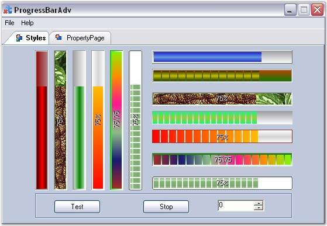

ProgressBars are used in applications to provide a visual cue during lengthy operations such as installation, copying, and printing. It also lets users know the time remaining to complete a lengthy operation. When an application is performing a lengthy task in the background, users may not be sure if the application is still working. A ProgressBar can be used to provide a visual cue that the application is indeed working and the task is being completed.

Figure 953: Different Properties of the ProgressBarAdv Control
The ProgressBarAdv is an advanced progressbar with a wide array of properties that can be set using the properties window. It comes with many styles which can be set through the BackgroundStyle and ProgressStyle properties. The orientation of a ProgressBarAdv can be set to vertical or horizontal using the ProgressOrientation property.
 Features
Features